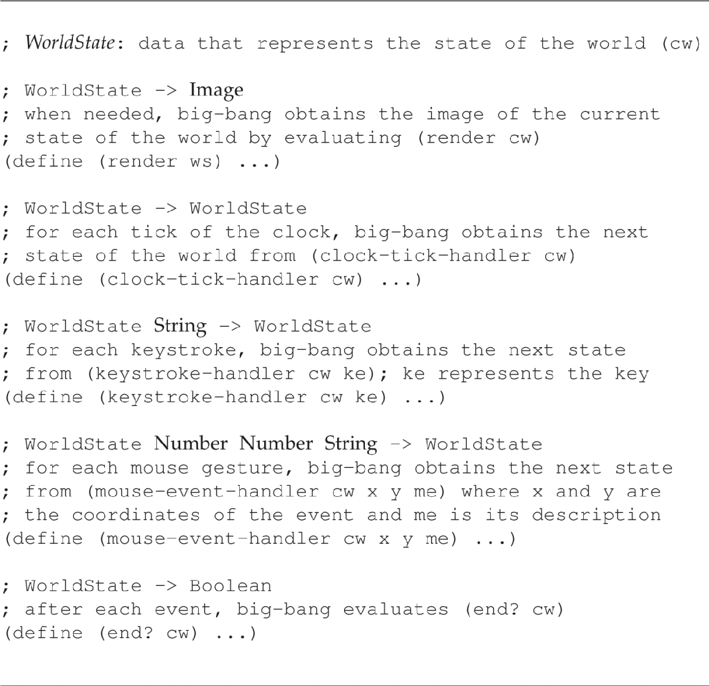
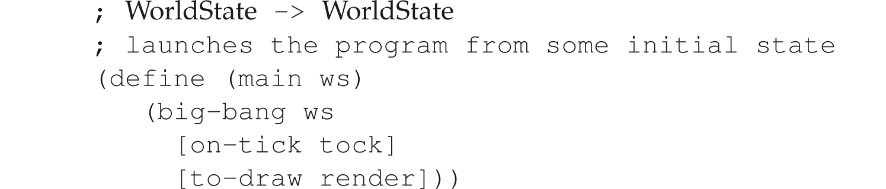
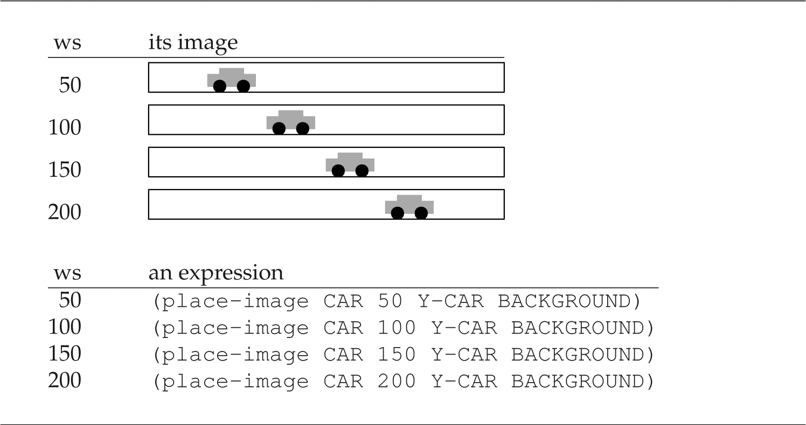
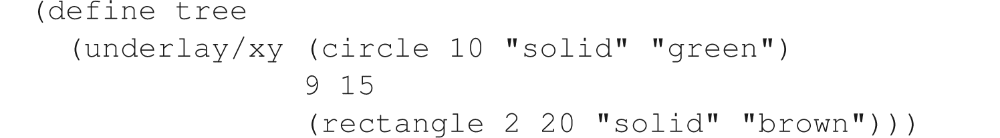
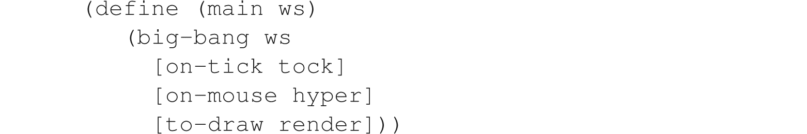
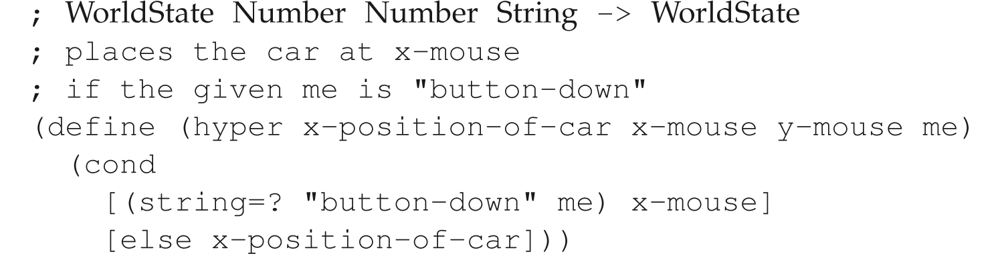

3.6 Designing World Programs
While the previous chapter introduces the 2htdp/universe library in an ad hoc way, this section demonstrates how the design recipe also helps you create world programs systematically. It starts with a brief summary of the 2htdp/universe library based on data definitions and function signatures. Then it spells out the design recipe for world programs.
The teachpack expects that a programmer develops a data definition that represents the state of the world and a function render that knows how to create an image for every possible state of the world. Depending on the needs of the program, the programmer must then design functions that respond to clock ticks, keystrokes, and mouse events. Finally, an interactive program may need to stop when its current world belongs to a sub-class of states; end? recognizes these final states. Figure 18 spells out this idea in a schematic and simplified way.

Figure 18: The wish list for designing world programs
Assuming that you have a rudimentary understanding of the workings of big-bang, you can focus on the truly important problem of designing world programs. Let’s construct a concrete example for the following design recipe:
Sample Problem Design a program that moves a car from left to right on the world canvas, three pixels per clock tick.
For this problem statement, it is easy to imagine scenes for the domain:
In this book, we often refer to the domain of an interactive big-bang program as a “world,” and we speak of designing “world programs.”
The design recipe for world programs, like the one for functions, is a tool for systematically moving from a problem statement to a working program. It consists of three big steps and one small one:
1. For all those properties of the world that remain the same over time and are needed to render it as an Image, introduce constants. In BSL, we specify such constants via definitions. For the purpose of world programs, we distinguish between two kinds of constants:
(a) “Physical” constants describe general attributes of objects in the world, such as the speed or velocity of an object, its color, its height, its width, its radius, and so forth. Of course these constants don’t really refer to physical facts, but many are analogous to physical aspects of the real world.
In the context of our sample problem, the radius of the car’s wheels and the distance between the wheels are such “physical” constants:
(define WIDTH-OF-WORLD 200)
(define WHEEL-RADIUS 5)
(define WHEEL-DISTANCE (* WHEEL-RADIUS 5))
Note how the second constant is computed from the first.
(b) Graphical constants are images of objects in the world. The program composes them into images that represent the complete state of the world.
We suggest you experiment in DrRacket’s interactions area to develop such graphical constants.
Here are graphical constants for wheel images of our sample car:
(define WHEEL
(circle WHEEL-RADIUS "solid" "black"))
(define SPACE
(rectangle … WHEEL-RADIUS … "white"))
(define BOTH-WHEELS
(beside WHEEL SPACE WHEEL))
Graphical constants are usually computed, and the computations tend to involve physical constants and other images.
It is good practice to annotate constant definitions with a comment that explains what they mean.
2. Those properties that change over time—in reaction to clock ticks, keystrokes, or mouse actions—give rise to the current state of the world. Your task is to develop a data representation for all possible states of the world. The development results in a data definition, which comes with a comment that tells readers how to represent world information as data and how to interpret data as information about the world.
Choose simple forms of data to represent the state of the world.
For the running example, it is the car’s distance from the left margin that changes over time. While the distance to the right margin changes, too, it is obvious that we need only one or the other to create an image. A distance is measured in numbers, so the following is an adequate data definition:
; A WorldState is a Number.
; interpretation the number of pixels between
; the left border of the scene and the car
An alternative is to count the number of clock ticks that have passed and to use this number as the state of the world. We leave this design variant as an exercise.
3. Once you have a data representation for the state of the world, you need to design a number of functions so that you can form a valid big-bang expression.
To start with, you need a function that maps any given state into an image so that big-bang can render the sequence of states as images:
; render
Next you need to decide which kind of events should change which aspects of the world state. Depending on your decisions, you need to design some or all of the following three functions:
; clock-tick-handler
; keystroke-handler
; mouse-event-handler
Finally, if the problem statement suggests that the program should stop if the world has certain properties, you must design
; end?
For the generic signatures and purpose statements of these functions, see figure 18. Adapt these generic purpose statements to the particular problems you solve so that readers know what they compute.
In short, the desire to design an interactive program automatically creates several initial entries for your wish list. Work them off one by one and you get a complete world program.
Let’s work through this step for the sample program. While big-bang dictates that we must design a rendering function, we still need to figure out whether we want any event-handling functions. Since the car is supposed to move from left to right, we definitely need a function that deals with clock ticks. Thus, we get this wish list:
; WorldState -> Image
; places the image of the car x pixels from
; the left margin of the BACKGROUND image
(define(render x)
BACKGROUND)
; WorldState -> WorldState
; adds 3 to x to move the car right
(define(tock x)
x)
Note how we tailored the purpose statements to the problem at hand, with an understanding of how big-bang will use these functions.
4. Finally, you need a main function. Unlike all other functions, a main function for world programs doesn’t demand design or testing. Its sole reason for existing is that you can launch your world program conveniently from DrRacket’s interactions area.
The one decision you must make concerns main’s arguments. For our sample problem, we opt for one argument: the initial state of the world. Here we go:

Hence, you can launch this interactive program with
> (main 13)
to watch the car start at 13 pixels from the left margin. It will stop when you close big-bang’s window. Remember that big-bang returns the current state of the world when the evaluation stops.
Naturally, you don’t have to use the name “WorldState” for the class of data that represents the states of the world. Any name will do as long as you use it consistently for the signatures of the event-handling functions. Also, you don’t have to use the names tock, end?, or render. You may name these functions whatever you like, as long as you use the same names when you write down the clauses of the big-bang expression. Lastly, you may have noticed that you may list the clauses of a big-bang expression in any order as long as you list the initial state first.
Let’s now work through the rest of the program design process, using the design recipe for functions and other design concepts spelled out so far.
Exercise 39. Good programmers ensure that an image such as CAR can be enlarged or reduced via a single change to a constant definition. We started the development of our car image with a single plain definition:
(define WHEEL-RADIUS 5)
Good programmers establish a single point of control for all aspects of their programs, not just the graphical constants. Several chapters deal with this issue.
The definition of WHEEL-DISTANCE is based on the wheel’s radius. Hence, changing WHEEL-RADIUS from 5 to 10 doubles the size of the car image. This kind of program organization is dubbed single point of control, and good design employs this idea as much as possible.
Develop your favorite image of an automobile so that WHEEL-RADIUS remains the single point of control. 
The next entry on the wish list is the clock tick handling function:
; WorldState -> WorldState
; moves the car by 3 pixels for every clock tick
(define (tock ws) ws)
Since the state of the world represents the distance between the left margin of the canvas and the car, and since the car moves at three pixels per clock tick, a concise purpose statement combines these two facts into one. This also makes it easy to create examples and to define the function:
; WorldState -> WorldState
; moves the car by 3 pixels for every clock tick
; examples:
; given: 20, expect 23
; given: 78, expect 81
(define(tock ws)
(+ ws 3))
The last design step calls for confirmation that the examples work as expected. So we click the RUN button and evaluate these expressions:
> (tock 20)
23
> (tock 78)
81
Since the results are as expected, the design of tock is finished.
Exercise 40. Formulate the examples as BSL tests, that is, using the check-expect form. Introduce a mistake. Re-run the tests.
Our second entry on the wish list specifies a function that translates the state of the world into an image:
; WorldState -> Image
; places the car into the BACKGROUND scene,
; according to the given world state
(define (render ws)
BACKGROUND)
To make examples for a rendering function, we suggest arranging a table like the upper half of figure 19. It lists the given world states and the desired scenes. For your first few rendering functions, you may wish to draw these images by hand.

Figure 19: Examples for a moving car program
Even though this kind of image table is intuitive and explains what the running function is going to display—a moving car—it does not explain how the function creates this result. To get from here to there, we recommend writing down expressions like those in the lower half of figure 19 that create the images in the table. The capitalized names refer to the obvious constants: the image of a car, its fixed y-coordinate, and the background scene, which is currently empty.
This extended table suggests a pattern for the formula that goes into the body of the render function:
; WorldState -> Image
; places the car into the BACKGROUND scene,
; according to the given world state
(define (render ws)
place-image CAR ws Y-CAR BACKGROUND))
And that is mostly all there is to designing a simple world program.
Exercise 41. Finish the sample problem and get the program to run. That is, assuming that you have solved exercise 39, define the constants BACKGROUND and Y-CAR. Then assemble all the function definitions, including their tests. When your program runs to your satisfaction, add a tree to the scenery. We used

to create a tree-like shape. Also add a clause to the big-bang expression that stops the animation when the car has disappeared on the right side.
After settling on an initial data representation for world states, a careful programmer may have to revisit this fundamental design decision during the rest of the design process. For example, the data definition for the sample problem represents the car as a point. But (the image of) the car isn’t just a mathematical point without width and height. Hence, the interpretation statement—the number of pixels from the left margin—is an ambiguous statement. Does this statement measure the distance between the left margin and the left end of the car? Its center point? Or even its right end? We ignored this issue here and leave it to BSL’s image primitives to make the decision for us. If you don’t like the result, revisit the data definition above and modify it or its interpretation statement to suit your taste.
Exercise 42. Modify the interpretation of the sample data definition so that a state denotes the x-coordinate of the right-most edge of the car.
Exercise 43. Let’s work through the same problem statement with a time-based data definition:
; An AnimationState is a Number.
; interpretation the number of clock ticks
; since the animation started
Like the original data definition, this one also equates the states of the world with the class of numbers. Its interpretation, however, explains that the number means something entirely different.
Design the functions tock and render. Then develop a big-bang expression so that once again you get an animation of a car traveling from left to right across the world’s canvas.
How do you think this program relates to animate from the Prologue?
Use the data definition to design a program that moves the car according to a sine wave. (Don’t try to drive like that.)
Dealing with mouse movements is occasionally tricky because they aren’t exactly what they seems to be. For a first idea of why that is, read the note on “Mice and Characters” in the on-line version.
We end the section with an illustration of mouse event handling, which also illustrates the advantages that a separation of view and model provide. Suppose we wish to allow people to move the car through “hyperspace”:
Sample Problem Design a program that moves a car across the world canvas, from left to right, at the rate of three pixels per clock tick. If the mouse is clicked anywhere on the canvas, the car is placed at the x-coordinate of that click.
The bold part is the expansion of the sample problem from above.
When we are confronted with a modified problem, we use the design process to guide us to the necessary changes. If used properly, this process naturally determines what we need to add to our existing program to cope with the expansion of the problem statement. So here we go:
1. There are no new properties, meaning we do not need new constants.
2. The program is still concerned with just one property that changes over time, the x-coordinate of the car. Hence, the data representation suffices.
3. The revised problem statement calls for a mouse-event handler, without giving up on the clock-based movement of the car. Hence, we state an appropriate wish:
; WorldState Number Number String -> WorldState
; places the car at x-mouse
; if the given me is "button-down"
(define (hyper x-position-of-car x-mouse y-mouse me)
x-position-of-car)
4. Lastly, we need to modify main to take care of mouse events. All this requires is the addition of an on-mouse clause that defers to the new entry on our wish list:

After all, the modified problem calls for dealing with mouse clicks and everything else remains the same.
The rest is a mere matter of designing one more function, and for that we use the design recipe for functions.
An entry on the wish list covers the first two steps of the design recipe for functions. Hence, our next step is to develop some functional examples:
; WorldState Number Number String -> WorldState
; places the car at x-mouse
; if the given me is "button-down"
; given: 21 10 20 "enter"
; wanted: 21
; given: 42 10 20 "button-down"
; wanted: 10
; given: 42 10 20 "move"
; wanted: 42
(define (hyper x-position-of-car x-mouse y-mouse me)
x-position-of-car)
The examples say that if the string argument is equal to "button-down", the function returns x-mouse; otherwise it returns x-position-of-car.
Exercise 44. Formulate the examples as BSL tests. Click RUN and watch them fail.
To complete the function definition, we must appeal to your fond memories from the Prologue, specifically memories about the conditional form. Using cond, hyper is a two-line definition:

In the next chapter, we explain designing with cond in detail.
If you solved exercise 44, rerun the program and watch all tests succeed. Assuming the tests do succeed, evaluate
(main 1)
in DrRacket’s interactions area and transport your car through hyperspace.
You may wonder why this program modification is so straightforward. There are really two reasons. First, this book and its software strictly separate the data that a program tracks—the model—and the image that it shows—the view. In particular, functions that deal with events have nothing to do with how the state is rendered. If we wish to modify how a state is rendered, we can focus on the function specified in a to-draw clause. Second, the design recipes for programs and functions organize programs in the right way. If anything changes in a problem statement, following the design recipe a second time naturally points out where the original problem solution has to change. While this may look obvious for the simple kind of problems we are dealing with now, it is critical for the kind of problems that programmers encounter in the real world.